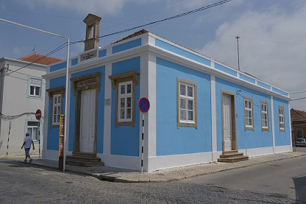
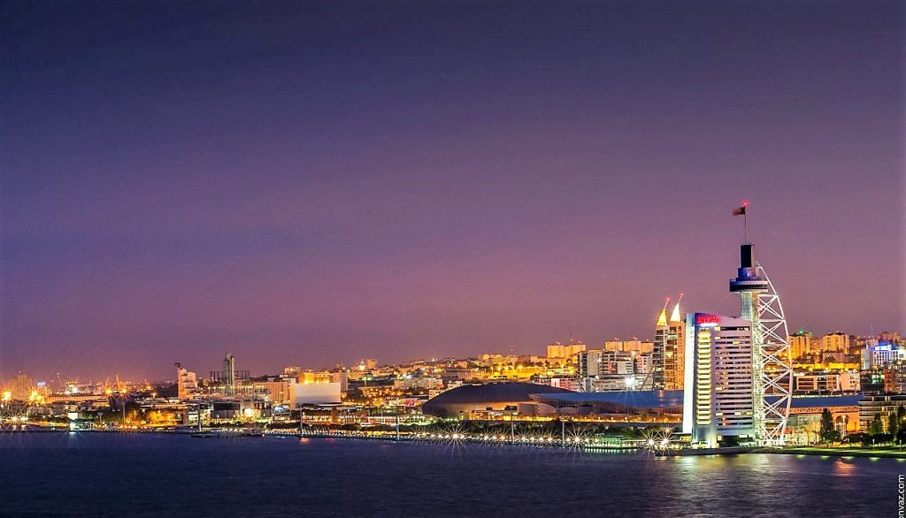

{% extends "base.html" %} {% block title %}Atrações{% endblock %} {% block
content %}
Na margem esquerda do Tejo, a cidade do Montijo fica a
minutos de Lisboa, mas com um carácter que fará a capital
sentir-se uma vida inteira de distância. Poucos turistas chegam ao Montijo; é apenas uma comunidade pacata, com bares, onde você pode
comprar um bico por 50 centavos.
Há uma encantadora igreja antiga no centro, e como a antiga
indústria da cidade desapareceu, eles foram substituídos por
museus que mostram como as pessoas viviam da água e da
terra. Lisboa fica a poucos minutos do outro lado do rio, seja pela
ponte Vasco da Gama ou pelo serviço de balsa, para uma viagem
de turismo que você não esquecerá tão cedo.
Vamos explorar as melhores coisas para fazer no Montijo :
1. Ferry
Esta é a primeira coisa que você deve fazer no Montijo, porque é
um passeio glorioso através do Tejo.
O tempo de viagem até ao Terreiro do Paço é de aproximadamente
30 minutos através de um catamarã rápido, e existem 22 travessias
por dia, seja na hora ou meia hora.
Você invejará as pessoas que conseguirem fazer essa travessia
todos os dias, à medida que os bairros de Alfama e Baia
surgissem.
Há oportunidades fotográficas em todos os ângulos, em direção ao
imenso Vasco da Gama e à Ponte 25 de Abril ou de volta à estátua
do Cristo Rei, na margem esquerda de Lamada.
2. Ponte Vasco da Gama
A definição de um megaprojeto, a ponte Vasco da Gama, é a mais
longa da Europa, se você incluir seus viadutos.
Soma-se a 12,3 quilômetros. Começou em 1995 e abriu para a Expo
98 de Lisboa
Quando foi concluído, transformou Lisboa, não só porque se
tornou uma referência visual para o leste sobre o Tejo, mas
porque ajudou a canalizar o tráfego rodoviário para o norte ou
sul de Portugal, longe da cidade.
Quando você está atravessando você não pode nem ver para o outro
lado da estrutura, enquanto a paisagem urbana de Lisboa é uma
maravilha de se ver, especialmente se você está indo para o
norte.
3. Igreja Matriz de Montijo
O principal monumento da Praça da República, esta igreja remonta
ao início dos anos 1400.
Nas primeiras décadas do século XVI foi remodelado em estilo
manuelino, e as cantarias desta fase podem ser vistas na abóbada
da capela-mor, onde os pilares têm delicados motivos
florais.
Houve mais mudanças à frente nos anos 1600 e 1700, quando a
segunda torre da igreja foi adicionada e o interior da nave foi
revestido com telhas atapete (carpete), e depois grandes painéis
de azulejos que contam a história da vida de Maria, intervenção
do Espírito Santo e das prefigurações eucarísticas.
4. Museu Municipal
Se precisa de um motivo para visitar o museu municipal do
Montijo é para ver a Casa Mora, o prédio que o abriga.
Este lindo palácio foi concluído em 1875 por Domingos Tavares e
Margarida Inácia dos Anjos, que eram um casal de poder local,
possuindo grandes parcelas de terra na área.
Tem uma longa varanda reforçada por bonitos cachorros, e no
telhado, cercado por uma balaustrada, há uma lanterna com vidro
multicolorido.
O interior tem uma sensação luxuosa, Beaux-Arts, com afrescos e
estuque dourado.
As galerias têm fotos de arquivo da cidade, ferramentas para
artesanato local tradicional e também uma pequena exposição
interessante sobre azulejos.
5. Moinho de Maré
Um interessante fragmento da indústria ribeirinha do Montijo foi
restaurado e aberto ao público em 2005. Junto ao antigo Cais das
Faluas existe um moinho de marés que foi mencionado pela primeira
vez em 1646, mas a cruz da Ordem de Santiago que se pode ver no
lintel da porta sugere que é muito mais antigo que isso.
Todo o caminho até os cereais de 1900 foram enterrados neste
edifício, aproveitando o fluxo e refluxo do rio Tejo.
Existem dois quartos; um com as pedras de moagem e o outro armazenando a água que
alimentava esses mecanismos.
6. Praia Fluvial Samouco
Em um local inesperado há uma praia à direita no estuário.
Fica apenas a alguns momentos do Montijo e merece uma visita,
mesmo que só queira saborear os panoramas de Lisboa do outro lado
da água e a Ponte Vasco da Gama serpenteando à distância.
Há uma gama surpreendente de amenidades aqui, com guarda-sóis,
espreguiçadeiras, passarelas de madeira que atravessam a areia,
playground, piscina e mesas de ténis de mesa.
Se você quer entrar no Tejo é outra questão, mas a praia é boa
para relaxar ao sol e olhar para Lisboa.
7. Museu Agrícola da Atalaia
Um par de minutos na estrada e você está na zona rural do
distrito de Setúbal.
A Quinta Nova da Atalaia, em frente a um pomar, é uma
propriedade agrícola fundada em 1875. É agora palco de um museu
que o levará de volta às raízes agrícolas do Montijo.
Todo o know-how dos velhos tempos e equipamentos para fazer
azeite e vinho é apresentado aqui, com duas prensas de óleo,
quatro tanques de fermentação, bem como uma destilaria para fazer
conhaque.
Isto implica uma caldeira, forno e cobre ainda.
A propriedade é parte integrante da exposição, pois você pode
passear pelo pomar de laranjeiras e limoeiros e observar o
sistema tradicional de irrigação.
8. Museu do Pescador
Escusado será dizer que, como uma comunidade ribeirinha, a pesca
é no sangue de Montijo.
E em 2014, um novo museu foi inaugurado no antigo prédio da
escola Conde Ferreira, pintado com um tom de azul
impressionante.
É administrado pelo sindicato regional da pesca (SCUPA), e suas
cerca de 80 exibições são divididas em seções distintas, cobrindo
as ferramentas do comércio, com redes, equipamentos de
manipulação e navegação, mas também a vida doméstica e espiritual
dos pescadores. , representado por utensílios domésticos e
painéis de azulejos da Virgem.
Há um barco de pesca de tamanho normal, uma série de navios
modelo e muitas ilustrações e fotografias de arquivo.

9. Cinema-Teatro Joaquim d Almeida
Há um charme inegável neste cinema e no local de artes
cênicas.
Subiu em 1957 durante o regime de Salazar.
Tem as linhas sóbrias que eram típicas de edifícios deste
período e é embelezada com a escultura de dois artistas
proeminentes da época, Martins Correia e José Farinha.
Não é exagero dizer que há sempre alguma coisa acontecendo neste
local, seja o cinema artístico (filmes em inglês não são
dublados), dança, teatro, comédia, fado ao vivo, jazz ou música
clássica.
10. Forum Montijo
Gosta de comprar roupas ou precisa matar o tempo em um dia
chuvoso você poderia fazer muito pior que este novo shopping no
Montijo.
Com marcas como a H & M, a Zara, a Foot Locker e a Lacoste,
é reconfortante não ter de entrar em Lisboa para uma viagem de
compras.
E se aluga alojamento no Montijo existe também uma filial do
hipermercado Continente.
Há acesso wi-fi gratuito, playgrounds para os mais pequenos, uma
ampla seleção de restaurantes e um cinema com a maioria dos
filmes em inglês com legendas em português.
11. Praça de Toiros do Montijo
A Praça de Toiros do Montijo, oficialmente Praça de Toiros
Amadeu Augusto dos Santos, foi inaugurada a 1 de Setembro de 1957
e tem uma lotação de 6.281 lugares.
Após a demolição, em 1950, da antiga Praça de Toiros (inaugurada
em 1888), foi criada uma Comissão Pró-Praça de Toiros, com o
objectivo de reunir fundos para a construção de um novo edifício
taurino. Os grandes obreiros da construção foram Amadeu Augusto
dos Santos, José Salgado de Oliveira e Isidoro Sampaio de
Oliveira.
Segundo projecto do arquitecto Amadeu José Gomes dos Santos,
filho de Amadeu Augusto dos Santos, a construção da nova Praça de
Toiros decorreu de 1 de Abril a 28 de Agosto de 1957. A
propriedade foi entregue à Santa Casa da Misericórdia do
Montijo.
A Corrida de Toiros inaugural, de gala à antiga portuguesa,
decorreu a 1 de Setembro de 1957 e foi presidida pelo
Governador-Civil de Setúbal, Dr. Miguel Bastos.
Atualmente, esta praça acolhe diversos espectáculos
tauromáquicos ao longo do ano, especialmente durante as Festas
Populares de São Pedro. Aqui também coexistem dois grupos de
forcados desta cidade que frequentam esta praça: O Grupo de
Forcados Amadores do Montijo e a Tertúlia Tauromáquica do
Montijo.
12. Oceanário de Lisboa
A atracção principal da Expo 98 e do Parque das Nações é este
aquário de classe mundial, e é um dia obrigatório se estiver
aqui com crianças.
Existem mais de 16.000 animais nestes tanques
maravilhosamente iluminados.
A peça central é um enorme aquário, com sete metros de
profundidade, simulando um ambiente oceânico com raias,
tubarões e gigantescos peixes-lua, além de alimentadores
inferiores na areia abaixo.
Os outros recintos imitam ambientes naturais em todo o
planeta, sejam recifes tropicais no Oceano Índico ou uma zona
antártica que abriga pingüins.

13. Pavilhão do Conhecimento
pode fazer um duplo cabeçalho para os pequenos neste museu de
ciências interativo apenas pelo Oceanário.
Há exposições em grande escala em diferentes campos da
ciência, bem como módulos permanentes que incentivam as
crianças a explorar a matemática, a física, o corpo humano e a
tecnologia de formas ativas e práticas.
Você pode construir circuitos elétricos e corridas de
mármore, andar de bicicleta em um fio elétrico, construir sua
própria casa, fazer aviões de papel, aprender como as
bactérias se espalham, tornar-se um astronauta e muito
mais.
Todas as atividades são assistidas por um pequeno exército de
funcionários, ajudando as crianças a se recuperarem
imediatamente.
14. Parque das Nações
Na construção da Expo 98, todo o nordeste de Lisboa foi
revitalizado com um centro comercial, uma torre de observação,
uma marina e modernos edifícios residenciais.
Foi o maior projeto de redesenvolvimento urbano na
Europa.
Dependendo do tráfego, você pode atingir esse desenvolvimento
em cerca de 15 minutos.
É uma visita para fazer à noite, pois o bairro tem uma
sensação metropolitana quando as torres de escritórios estão
iluminadas.
Você pode escalar a torre Vasco da Gama para ter uma visão
ininterrupta do rio e da ponte, fazer uma viagem no
teleférico, passear pelos jardins aquáticos ou escolher entre
uma infinidade de restaurantes e bares.

15. Lisboa
E de lá a capital de Portugal é sua ostra.
Se você usar o metrô para se locomover, nenhuma visão estará
fora de alcance.
Algo que todo visitante deve fazer é ir para o oeste até o
bairro de Belém, onde encontram-se duas das sete maravilhas de
Portugal.
A Torre de Belém é uma fortaleza do século XVI, mas forjada
com um acabamento surpreendente.
O mesmo se aplica ao Mosteiro dos Jerónimos, que possui
trabalhos em pedra de estilo manuelino e renascentista.
Depois disso, não há limite para as coisas que você pode
fazer, seja pilotando os funiculares e bondes antigos em
Alfama, pegando fado na Bairra Alta ou entrando em contato com
o artesanato de azulejos de Portugal no National Tile
Museum.
{% endblock %}